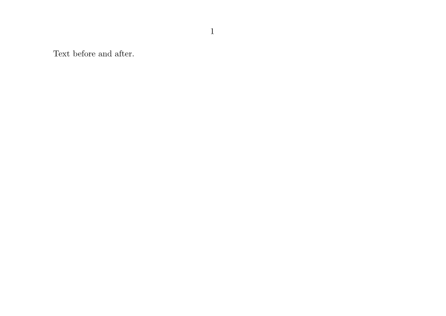

Contents
Summary
The instances of \attachment are used for inclusion of attachment files into the PDF output.
Instances
| \attachment |
Settings instance
Description
Additional documentation can be found in the
"Interaction" manual
.
Examples
Use of attachment with customized symbol (the file "myattachment.txt" should exists, that why the demo here does not show attachment...)
{kind=link}
-
\setuppapersize[A6,landscape] %------------------------------------------------------------------------------ \setupinteraction[state=start] % #0 - Activate interaction %------------------------------------------------------------------------------ \startuseMPgraphic{myattachmentsymbol} % #1 - Draw a symbol, here a paperclip! path pa; numeric u; u=1mm; numeric Ra; Ra=u/2; numeric Rb; Rb=1.5Ra; numeric Rc; Rc=1.35Rb; numeric La; La=3.5u; numeric Lb; Lb=-La/10; numeric Lc; Lc=1.2*La; pair a[]; a0=(0,0); a1=(La,0); a2=(La+Ra,-Ra); a3=(La,-2Ra); a4=(Lb,-2Ra); a5=(Lb-Rb,-2Ra+Rb); a6=(Lb,-2Ra+2Rb); a7=(Lc,-2Ra+2Rb); a8=(Lc+Rc,-2Ra+2Rb-Rc); a9=(Lc,-2Ra+2Rb-2Rc); a10=(1u,-2Ra+2Rb-2Rc); pa := (a0--a1..a2..a3--a4..a5..a6--a7..a8..a9--a10) rotated 45; path pb; pb := fullcircle scaled (2.2*(Lc-Lb-Rb)) shifted (center(pa)) ; fill pb withcolor 0.5white; pickup pencircle scaled (1.5*(Rb-Ra)) ; draw pa withcolor white; \stopuseMPgraphic %------------------------------------------------------------------------------ \definesymbol % #2 - Define the drawing as a symbol [myattachmentsym] [\useMPgraphic{myattachmentsymbol}] %------------------------------------------------------------------------------ \setupattachments % #3 - Use the symbol for attachment [symbol=myattachmentsym] %------------------------------------------------------------------------------ \starttext % #4 - Use it Text before \attachment [file={myattachment.txt}, title={attachment title}, location=rightmargin] and after. \stoptext
produces
- 